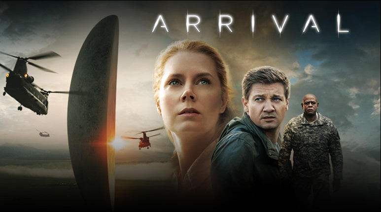
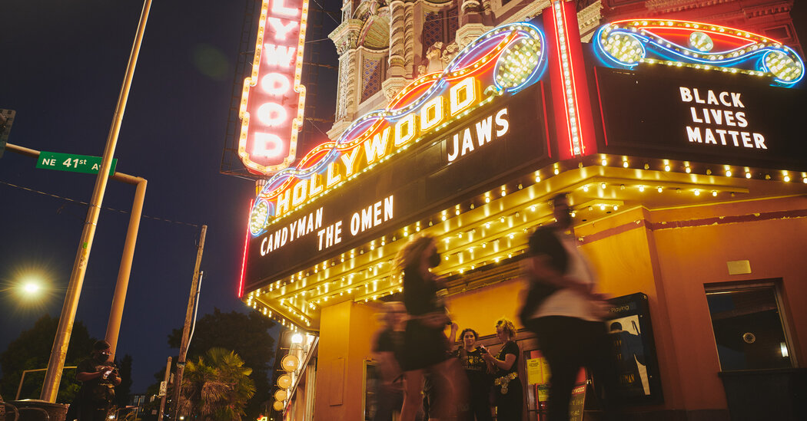
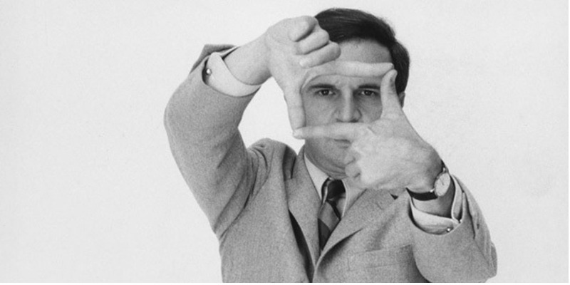

Arrival (Bra: A Chegada; Prt: O Primeiro Encontro) é um filme norte-americano de 2016, dos gêneros ficção científica, drama e suspense, dirigido por Denis Villeneuve, com roteiro de Eric Heisserer baseado no conto "Story of Your Life", de Ted Chiang, publicado na antologia Starlight 2 em 1999.
Estrelado por Amy Adams, Jeremy Renner e Forest Whitaker, teve sua primeira exibição no Festival de Cinema de Veneza em 1 de setembro de 2016 e foi lançado nos Estados Unidos em 11 de novembro de 2016 pela Paramount Pictures.
O filme foi aclamado pela crítica especializada, que elogiou a atuação de Adams, a direção de Villeneuve e a originalidade do roteiro. Teve oito indicações ao Oscar 2017, incluindo melhor filme, melhor diretor e melhor roteiro adaptado, mas venceu apenas na categoria de melhor edição de som.
Sinópse

Seres extraterrestres chegam em doze naves e pousam em doze pontos diferentes da Terra. Após as autoridades americanas perceberem que eles querem fazer contato, a Dra. Louise Banks (Amy Adams), uma renomada linguista que ajudara o Estado anteriormente, em conjunto com o experiente físico Ian Donnelly (Jeremy Renner), são procurados por militares para interagirem com as criaturas, traduzir os sinais e desvendar se os alienígenas representam uma ameaça ou não. Ambos são pressionados a descobrir o propósito dos extraterrestres o mais rápido possível, assim como outras onze equipes de países onde as naves pousaram. Porém, os interesses políticos, a corrida pela supremacia, o medo do desconhecido e as diferenças culturais entrarão no caminho da ciência e apenas Louise tem a chave para desvendar esse mistério.
Bilheteria

Arrival arrecadou 100,6 milhões de dólares apenas nos Estados Unidos e no Canadá e 102,8 milhões em outros territórios, totalizando assim uma bilheteria mundial de 203,4 milhões, contra um orçamento de produção de 47 milhões de dólares.
Crítica

François Truffaut: Crítico Cinematográfico
Arrival foi aclamado pela crítica especializada. Com uma aprovação de 94% no Rotten Tomatoes baseada em 309 resenhas, obtendo uma pontuação equivalente a 8,4/10. Alcançou uma pontuação de 81 em 100 no Metacritic, com base em 52 críticas.